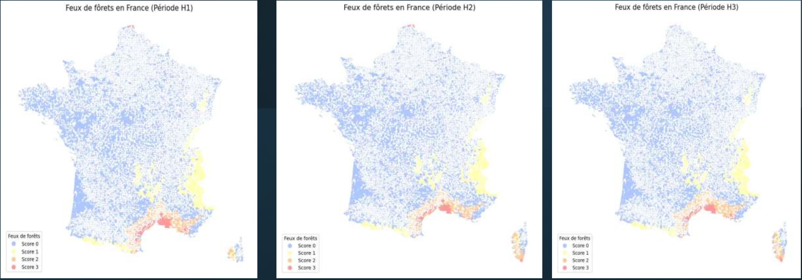
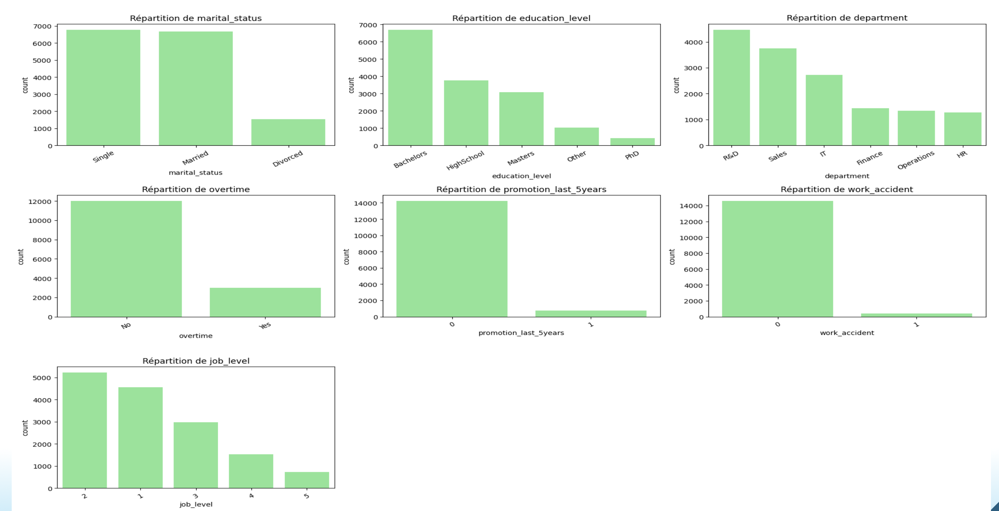
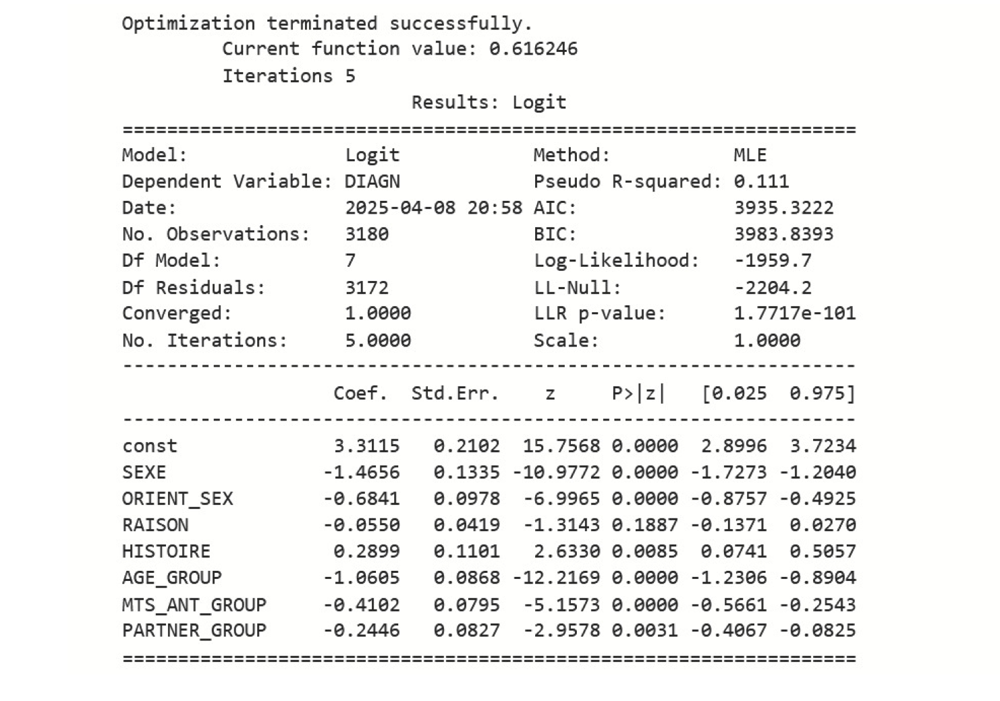
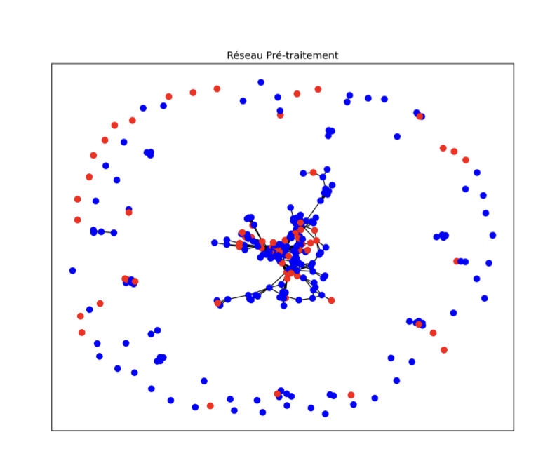
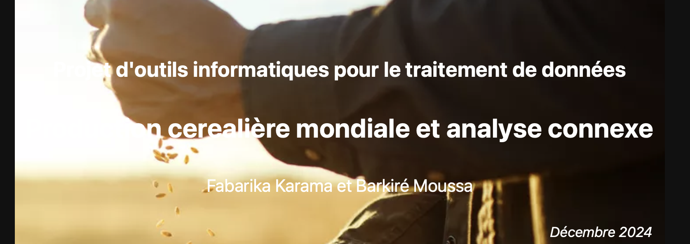
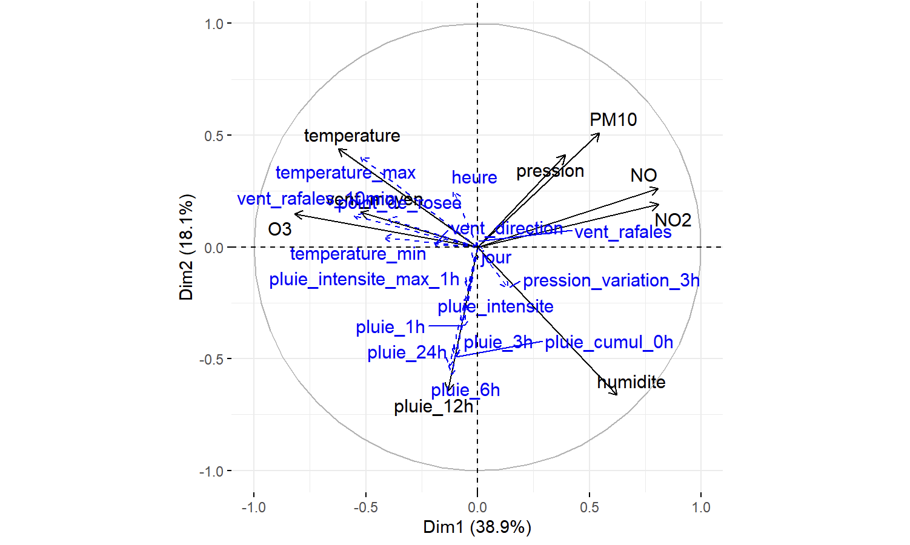

Méthodologie d'analyse de l'exposition d'un portefeuille financier (99 actifs) aux risques climatiques physiques, inondations, sécheresse, feux de forêt, vagues de chaleur. Clustering K-Means, cartographies GeoPandas par horizons temporels, pondération sectorielle.

Dataset de 15 000 employés (cible déséquilibrée 82,5%/17,5%). Preprocessing, rééquilibrage SMOTE, comparaison de modèles, Random Forest, XGBoost, Bagging, KNN. Variable la plus importante : le salaire mensuel. Recommandations RH sur rémunération, formation et bien-être.

ML supervisé (KNN, Random Forest, SMOTE) sur données épidémiologiques pour identifier les groupes à risque et les facteurs prédominants.
Analyse de l'impact des risques physiques et de transition sur les décisions d'investissement, la valorisation d'actifs et les réponses des régulateurs.
Revue de littérature sur les approches expérimentales et économétriques. Comparaison des modèles Gollier et Heath dans le contexte de la prévention.

310 chercheurs — centralités, détection de communautés Louvain, homophilie de genre avant et après une intervention de politique publique.
Contrôle optimal (PMP, HJB), jeux différentiels Open-Loop et Markov-Perfect, lien avec les Mean Field Games — appliqués à la pollution environnementale.
Interface Excel avec saisie, validation des données et envoi automatisé de rappels via Outlook pour la gestion des crédits clients.

Modèles prédictifs sur données agricoles mondiales — Régression, Random Forest, CatBoost, XGBoost — avec interprétation SHAP.

ACP sur données ATMO de Périgueux — relations entre paramètres climatiques et niveaux de pollution atmosphérique avec visualisation des interactions.